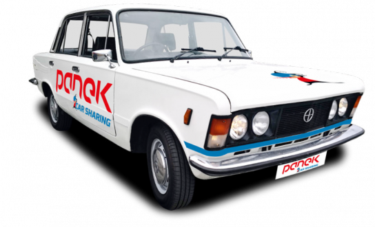

FIAT 125P
Samochód osobowy klasy średniej produkowany w Polsce w FSO w Warszawie od 1967 do 1991 roku na podstawie licencji włoskiej firmy FIAT. Po wygaśnięciu licencji w 1983 roku nazwę zmieniono na FSO 125p. Spotykane są też oznaczenia FSO 1300/1500. Potocznie nazywany Dużym Fiatem.